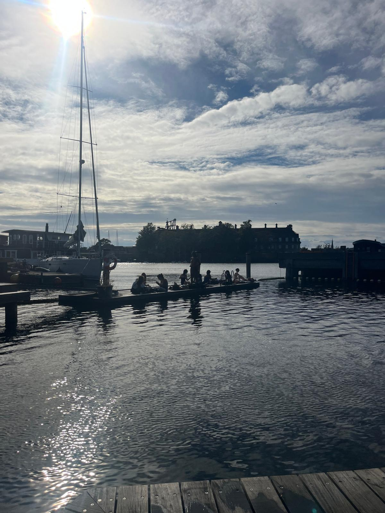

Main theme of the week: keep trying new things and just explore the sites I want to see
Biggest highlight: exploring the city on my own!
Biggest challenge: My assumptions about other americans
More detailed thoughts
August 30th - I biked two hours north to the Louisiana Museum! It was incredible. Perfect weather: sunny and a slight breeze. I learned that Denmark is very flat, so the ride, while long, was easy. :))
September 3rd - Biked to Reffen and swam at La Bachina. It did live up to the hype and I am very glad that I went while it was still warm out.
September 4th - I got my rice cooker. So happy, I’ve been using it nearly daily since.
September 5th - met some very cool people at Bastard Cafe and September 6th we explored Christainia together.
Favorite food: Cake from Sweet Valentine from TooGoodToGo
Shout out to the new people I met (who I want to hang out with again): Sadie, Anna, Sydney, and a handful of frisbee kids whose names I don't remember whoops.

Swimming at La BachinaFinn at Louisiana MuseumEnjoying the clear skiesTooGoodToGo Cake from Sweet Valentine